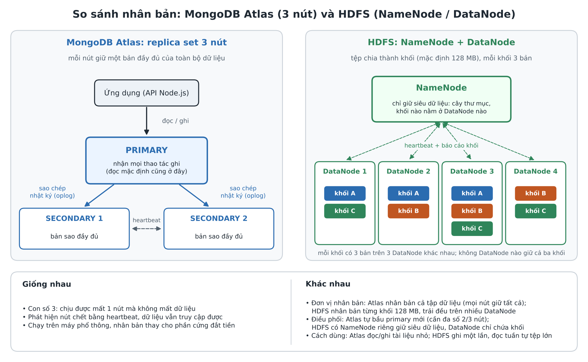

GET / trên Codespace{
"message": "Xin chào từ đám mây!",
"host": "codespaces-811ce0",
"platform": "Linux 6.8.0-1064-azure",
"cpus": 2,
"memoryGB": 7.8,
"uptimeSec": 844,
"time": "2026-11-05T06:59:02.059Z"
}
| Tiêu chí | Máy cá nhân | Codespace |
|---|---|---|
Thời gian đến khi chạy được node -v | Đã cài sẵn Node v24.21.0 nên chạy ngay được; nếu cài mới ước lượng ~5 phút (tải bộ cài, cài đặt, mở terminal) | Khoảng 1–2 phút (ước lượng) |
| Số CPU, RAM | Intel Core i5-13420H (8 nhân, 12 luồng), RAM 16 GB (15,7 GB khả dụng) | 2 CPU, 7,8 GB RAM (từ API: cpus=2, memoryGB=7.8) |
| Hệ điều hành | Windows 11 Home Single Language, phiên bản 25H2 (build 26200.9711) | Linux 6.8.0-1064-azure (máy ảo, hostname codespaces-811ce0) |
| Truy cập từ thiết bị khác | Phải tự cấu hình mạng/cổng, thường khó | Đặt cổng 3000 sang Public, mở URL .app.github.dev trên điện thoại |
| Chi phí, đo bằng gì | Điện, khấu hao máy, không đo theo lần dùng | Đo bằng core-giờ ở Settings → Billing → Usage; số liệu chưa hiển thị do cập nhật chậm (xem ảnh chụp trang Billing) |
codespaces-811ce0, 2 CPU, 7,8 GB RAM: một phần nhỏ của kho máy chủ dùng chung của GitHub, không phải máy riêng của em.Lần đo 1: host = codespaces-811ce0. Lần đo 2 (sau khi Stop rồi Start): host = codespaces-811ce0 (không đổi), nhưng uptimeSec giảm từ 844 xuống 706, chứng tỏ máy ảo đã tắt và khởi động lại. Tên máy gắn với codespace của em nên giữ nguyên, còn máy vật lý bên dưới do GitHub chọn và không hiển thị cho người dùng. Dù host có đổi hay không, máy ảo vẫn được cấp từ kho tài nguyên chung: người dùng chọn cấu hình, còn máy vật lý bên dưới do nhà cung cấp quyết định và có thể khác mỗi lần.
Gần với PaaS (môi trường phát triển theo dịch vụ). GitHub quản lý hạ tầng, ảo hóa và hệ điều hành nền; sinh viên quản lý mã nguồn và cấu hình runtime (devcontainer, Node.js). Không phải SaaS vì sinh viên không chỉ dùng phần mềm có sẵn, mà tự viết và chạy ứng dụng của mình.
Khắc phục: (1) mỗi máy phòng lab cài môi trường mất thời gian và dễ lệch phiên bản; (2) môi trường và dữ liệu gắn với một máy vật lý, không truy cập được từ thiết bị khác. Rủi ro mới: phụ thuộc Internet và nhà cung cấp, cùng nguy cơ lộ dịch vụ hoặc phát sinh chi phí ngoài ý muốn (ví dụ để cổng Public).
Image đã phát hành công khai trên GHCR: ghcr.io/phongpiner/notes-api:1.0 (digest sha256:8a3e65ccf0a5d6cbf263368cf4c28c12db1492ba6e326e49bc22650d06154431).
Link package: github.com/users/phongpiner/packages/container/package/notes-api.
Sau khi đăng xuất khỏi GHCR, lệnh docker pull ghcr.io/phongpiner/notes-api:1.0 vẫn kéo được image, chứng tỏ package ở chế độ Public. Dockerfile nằm ở thư mục gốc của repo.
notes1 (cổng 3000, không giới hạn)
{"message":"Xin chào từ đám mây!","host":"e572ce46403e","platform":"Linux 6.8.0-1070-azure","cpus":2,"memoryGB":7.8,"uptimeSec":906,...}
notes2 (cổng 3001, --cpus=0.5 --memory=128m)
{"message":"Xin chào từ đám mây!","host":"3d5bc1c9dff6","platform":"Linux 6.8.0-1070-azure","cpus":2,"memoryGB":7.8,"uptimeSec":906,...}
CONTAINER ID NAME CPU % MEM USAGE / LIMIT MEM % PIDS
3d5bc1c9dff6 notes2 0.00% 15.28MiB / 128MiB 11.94% 7
e572ce46403e notes1 0.00% 17.06MiB / 7.756GiB 0.21% 7
Trường host của hai bản sao khác nhau (là ID container), còn cpus, memoryGB và uptimeSec giống nhau và bằng của máy Codespace. Giới hạn 128 MiB của notes2 chỉ thấy ở cột MEM USAGE / LIMIT của docker stats.
| Tiêu chí | Codespace (máy ảo) | Container notes2 |
|---|---|---|
| Thời gian khởi động | Khoảng 1–2 phút (ước lượng, từ bài 1) | 0,370 giây (time docker run --rm notes-api:1.0 node -e "1") |
| Kích thước | 15 GB-tháng hạn mức đĩa | 251 MB trên đĩa (63,3 MB dung lượng nén), theo docker images |
| Nhân hệ điều hành | Riêng | Dùng chung với máy chủ: uname -r ngoài và trong container đều là 6.8.0-1070-azure |
| Mức cô lập | Cô lập ở mức phần cứng ảo, mỗi máy ảo có nhân và hệ điều hành riêng | Cô lập tiến trình bằng namespaces, giới hạn tài nguyên bằng cgroups, dùng chung nhân nên cô lập yếu hơn |
Ví dụ BasicFirstExample gốc có 1 máy chủ 8 lõi, 2 máy ảo (mỗi máy ảo 4 lõi) và 4 cloudlet (mỗi cloudlet 2 lõi, 10000 MI). Mỗi lần chạy chỉ đổi đúng một yếu tố so với bản gốc.
| Lần | Thay đổi | Thời điểm hoàn thành cloudlet cuối (giây mô phỏng) | Ghi chú |
|---|---|---|---|
| 0 | Giữ nguyên | 20,1 | 4 cloudlet, bắt đầu 0,1 |
| 1 | Nhân đôi VMS (2 → 4) | 45,6 | Vm 2 và Vm 3 không đặt được; cloudlet bắt đầu muộn ở 25,6 |
| 2 | Nhân đôi CLOUDLETS (4 → 8) | 40,1 (của 4 cloudlet đầu) | Chỉ 4 cloudlet (ID 0–3) hoàn thành và được in ra; cloudlet 4–7 chưa chạy xong khi mô phỏng kết thúc (xem giải thích lần 2) |
| 3 | CloudletSchedulerSpaceShared | 20,1 | Trùng lần 0 |
| 3b (bổ sung ngoài đề) | Space-shared và CLOUDLETS = 8 | 40,3 | 4 cloudlet đầu kết thúc ở 20,1; 4 cloudlet sau bắt đầu 20,2 và kết thúc 40,3 |
Bốn máy ảo cần 16 lõi trong khi máy chủ chỉ có 8 lõi. Log báo No suitable host found for Vm 2 và Vm 3, rồi 2 of the requested 4 VMs couldn't be created because suitable Hosts weren't found. Nhà môi giới (broker) thử đặt lại sau mỗi khoảng 5 giây (ở 0,00, 5,10, 10,20, 15,30, 20,40 và 25,50), đến 25,60 thì chuyển Vm 2 và Vm 3 vào danh sách thất bại. Các cloudlet chỉ bắt đầu chạy ở 25,6 (đúng lúc đó) và chạy trên Vm 0 và Vm 1, nên hoàn thành ở 45,6 thay vì 20,1. Thêm máy ảo không làm nhanh hơn mà còn chậm hơn vì tài nguyên máy chủ không đủ.
Cả 8 cloudlet được gửi đi ở giây 0,1 (cloudlet 4–7 vào Vm 0 và Vm 1). Đến giây 10,10 log cảnh báo cloudlet 4, 5, 6 và 7 yêu cầu 256 MB RAM và 500 Mbps băng thông của máy ảo nhưng không còn đủ, nên việc xử lý bị trì hoãn. Mỗi máy ảo chỉ có 512 MB RAM và 1000 Mbps (đặt trong mã bằng setRam(512).setBw(1000)), vừa đủ cho 2 cloudlet. Ở giây 40,22 hai máy ảo bị hủy; log báo mỗi máy ảo còn 2 cloudlet (đang chạy hoặc đang chờ) và có thể bỏ lỡ một số sự kiện, nên 4 cloudlet này không có trong bảng kết quả. Bốn cloudlet đầu hoàn thành ở 40,1 thay vì 20,1 như lần 0; log không cho biết chắc nguyên nhân của việc chậm gấp đôi này, nên nhóm chỉ ghi nhận số đo.
memoryGB bằng RAM máy chủ?API đọc thông tin bằng os.totalmem() và os.cpus(), các hàm này lấy dữ liệu từ nhân hệ điều hành dùng chung với máy chủ, nên container báo 2 CPU và 7,8 GB giống Codespace dù chạy với --cpus=0.5 --memory=128m. Giới hạn do cgroups áp đặt từ bên ngoài, chỉ thể hiện ở docker stats (128MiB). Hệ quả: ứng dụng tự dựa vào totalmem() để quyết định dung lượng bộ nhớ có thể tính sai, rồi bị hệ thống dừng khi vượt giới hạn. Ứng dụng Node.js hoặc Java chạy trong container nên cấu hình bộ nhớ heap tường minh theo giới hạn của container (với Node.js là --max-old-space-size, với Java là -Xmx hoặc -XX:MaxRAMPercentage) thay vì tin vào số liệu của máy chủ.
Với 4 cloudlet (lần 0 và lần 3) hai chính sách cho cùng kết quả 20,1 giây, vì mỗi máy ảo có 4 lõi và mỗi máy ảo nhận 2 cloudlet 2 lõi nên không có tranh chấp lõi. Khác biệt chỉ lộ ra khi số cloudlet vượt khả năng của máy ảo. Với 8 cloudlet, ở time-shared (lần 2) chỉ 4 cloudlet hoàn thành, ở 40,1 (chậm gấp đôi lần 0), còn 4 cloudlet kia chưa xong khi mô phỏng kết thúc. Ở space-shared (lần 3b) cả 8 cloudlet hoàn thành: mỗi cloudlet đang chạy nhận đủ lõi nên 4 cloudlet đầu xong ở 20,1, 4 cloudlet sau xếp hàng chờ, bắt đầu 20,2 và xong ở 40,3. Cần lưu ý lần 2 và lần 3b không so sánh thuần túy về chính sách lập lịch được, vì ở lần 2 còn có cảnh báo thiếu RAM và băng thông của máy ảo (xem giải thích lần 2).
Một nhà cung cấp hướng thị trường nhiều khả năng chọn time-shared cho gói giá rẻ: cho phép nhiều khách hàng dùng chung một máy chủ (cấp phát vượt mức), giảm chi phí trên mỗi khách, đổi lại hiệu năng dao động khi tải tăng. Space-shared hợp với gói cao cấp vì mỗi tác vụ nhận lõi riêng, hiệu năng ổn định nhưng nhà cung cấp phải để dành lõi, nên giá cao hơn.
Mô phỏng cho phép thử nhiều cấu hình rẻ và nhanh trước khi thuê hạ tầng thật. Ví dụ lần 1 cho thấy 4 máy ảo 4 lõi không đặt vừa trên máy chủ 8 lõi, một lỗi mà bên ngoài thực tế sẽ tốn tiền mới phát hiện. Kết quả có thể sai lệch với thực tế vì mô hình đơn giản hóa: không có nhiễu từ các khách hàng khác trên cùng máy chủ, độ trễ mạng, hỏng hóc phần cứng hay biến động tải, và kết quả phụ thuộc hoàn toàn vào tham số đầu vào. Một số hành vi chỉ là đặc điểm của công cụ, như việc broker thử đặt lại máy ảo nhiều lần làm cloudlet bắt đầu muộn ở lần 1.
API Node.js (Express) lưu ghi chú trong MongoDB Atlas (cụm miễn phí 3 nút, AWS Singapore) bằng Mongoose, và lưu tệp đính kèm trong bucket attachments của Supabase Storage (vùng Singapore). Cơ sở dữ liệu chỉ giữ URL của tệp (attachmentUrl). Mã nguồn: thư mục src/ và scripts/ của repo; thông tin kết nối nằm trong tệp .env (không commit).
| Thao tác | Mã mong đợi | Mã thực tế |
|---|---|---|
POST /notes (tạo) | 201 | 201 |
GET /notes?tag=nosql, GET /notes/:id | 200 | 200, 200 |
PUT /notes/:id | 200 | 200 |
POST /notes/:id/attachment | 200, có attachmentUrl | 200, có attachmentUrl |
DELETE /notes/:id (lần 1, lần 2) | 204, 404 | 204, 404 |
POST /notes thiếu title; GET /notes/abc | 400 | 400, 400 |
Tệp thử mở được qua: attachmentUrl (nội dung Tệp thử). Tệp vẫn mở được sau khi ghi chú đã bị xóa ở bước DELETE: xóa ghi chú trong MongoDB không xóa tệp trên Supabase, nên tệp trở thành tệp mồ côi và vẫn chiếm dung lượng cho đến khi dọn thủ công. Muốn tránh, phải xóa tệp trong kho khi xóa ghi chú.
scripts/explain.js)Bộ sưu tập có 2.000 tài liệu (do scripts/seed.js chèn). Truy vấn: { tags: 'docker' }, chỉ mục { tags: 1 } (multikey).
| Cách truy vấn | docsExamined | returned | ms |
|---|---|---|---|
Quét toàn bộ ($natural) | 2000 | 571 | 1 |
| Dùng chỉ mục | 571 | 571 | 1 |
Tỉ số docsExamined (quét toàn bộ / chỉ mục) = 2000 / 571 ≈ 3,5, tức chỉ mục giảm khối lượng quét khoảng 3,5 lần. Chỉ mục chỉ xem đúng 571 tài liệu khớp, bằng số tài liệu trả về. Thời gian chênh lệch không đo được vì cả hai cách đều ghi 1 ms (độ phân giải của executionTimeMillis), đúng như đề nói: với 2.000 tài liệu chênh lệch về thời gian nhỏ, nhưng chênh lệch về khối lượng quét thì rõ.

Quét toàn bộ phải đọc mọi tài liệu nên docsExamined tăng tuyến tính: từ 2.000 lên khoảng 2.000.000 (tăng 1.000 lần). Chỉ mục chỉ đọc các tài liệu khớp, nên docsExamined bằng số tài liệu có thẻ docker; ở dữ liệu mẫu thẻ này gặp ở khoảng 2/7 tài liệu, tức khoảng 570.000 tài liệu. Vì tỉ lệ khớp không đổi khi dữ liệu lớn lên, tỉ số giữa hai cách vẫn chỉ cỡ 3,5 lần: chỉ mục trên một thẻ phổ biến giúp ít, và cả hai cách đều chậm đi theo kích thước dữ liệu. Truy vấn trên 2.000 tài liệu ghi 1 ms; nếu ngoại suy tuyến tính thì 2 triệu tài liệu cỡ 1.000 ms (khoảng 1 giây) mỗi truy vấn, nhưng con số 1 ms bị làm tròn nên đây chỉ là ước lượng rất thô, chưa đo. Với giới hạn 100 thao tác/giây của gói miễn phí, các truy vấn chậm như vậy sẽ xếp hàng chờ, và độ trễ tăng lên khi có nhiều người dùng đồng thời. Cách giảm tải: truy vấn có chọn lọc cao hơn (chỉ mục ghép như { tags: 1, createdAt: -1 }), giới hạn và phân trang (API đã dùng limit(50)), và chỉ trả các trường cần thiết.
Một tài liệu MongoDB bị giới hạn 16 MB, và gói miễn phí chỉ có 512 MB dung lượng (nên kiểm tra lại trong trang Atlas); lưu nội dung tệp vào tài liệu làm cạn dung lượng nhanh. Nội dung tệp cũng làm tài liệu nặng hơn: mỗi lần đọc ghi chú đều kéo cả tệp qua mạng, bộ nhớ đệm của cơ sở dữ liệu bị chiếm bởi dữ liệu nhị phân, và mọi byte phải được sao chép sang cả 3 nút của cụm, vào cả bản sao lưu. Kho đối tượng sinh ra để lưu tệp lớn rẻ hơn và phục vụ trực tiếp qua HTTP cho trình duyệt mà không qua API. Cơ sở dữ liệu chỉ giữ siêu dữ liệu nhỏ (tiêu đề, thẻ, URL), nhờ đó truy vấn và chỉ mục nhanh.
Mục tiêu chung: chịu lỗi. Với 3 bản, hệ thống vẫn còn dữ liệu và tiếp tục hoạt động khi mất một nút (trường hợp HDFS vẫn còn bản thứ hai và thứ ba trong khi khối được sao chép lại cho đủ 3). Ở Atlas, con số 3 còn cho phép bầu primary mới khi cần đa số (2/3 nút). Khác nhau ở đơn vị nhân bản: Atlas nhân bản toàn bộ tập dữ liệu, mọi nút giữ một bản đầy đủ và các secondary sao chép từ nhật ký thao tác (oplog) của primary; HDFS nhân bản từng khối (mặc định 128 MB), 3 bản của mỗi khối nằm trên 3 DataNode khác nhau và không DataNode nào giữ toàn bộ dữ liệu, còn NameNode chỉ giữ siêu dữ liệu về khối nằm ở đâu.
MONGODB_URI, SUPABASE_URL, SUPABASE_SERVICE_KEY và JWT_SECRET nằm trong Codespaces Secrets; Push protection và Dependabot alerts đã bật. Lịch sử Git đã kiểm tra bằng git log --all -p | grep -iE "mongodb\+srv|supabase|secret": [ĐIỀN kết quả, ví dụ "không thấy chuỗi bí mật thật"]./notes yêu cầu token và lọc theo owner; truy cập ghi chú của người khác trả 404 (không tiết lộ ghi chú có tồn tại). Chống NoSQL injection bằng kiểm tra kiểu chuỗi và mongoose.set('sanitizeFilter', true); thêm helmet, giới hạn thân yêu cầu 100 KB và giới hạn tốc độ 20 yêu cầu/15 phút cho /auth.npm audit --omit=dev và Trivy trên hai image (xem Phần C).| Tình huống | Mong đợi | Thực tế |
|---|---|---|
GET /notes không token | 401 | 401 |
GET /notes có token | 200 | 200 |
Đăng nhập với {"email":{"$gt":""}} | 401 | 401 |
| Người dùng B đọc, sửa, xóa ghi chú của A | 404 | [ĐIỀN: 404, 404, 404] |
| 25 lần đăng nhập sai liên tiếp | 429 từ lần thứ 21 trong 15 phút | 15 lần 401 rồi 10 lần 429. Mã 429 bắt đầu ở lần thứ 16 của vòng lặp, tức yêu cầu thứ 21 trong cửa sổ 15 phút, vì 5 yêu cầu /auth trước đó (2 đăng ký, 2 đăng nhập, 1 thử injection) đã được tính. Chưa khởi động lại máy chủ trước khi đo. |
npm audit --omit=dev: found 0 vulnerabilities. Cảnh báo Dependabot: Có .
| Image | Kích thước | HIGH | CRITICAL |
|---|---|---|---|
node:22-alpine | 289 MB | 10 | 0 |
node:22 | 1,67 GB | 479 | 20 |
Số liệu lấy bằng Trivy, ngày quét 26/11/2026; cơ sở dữ liệu lỗ hổng thay đổi theo ngày nên con số có thể khác khi quét lại. Với node:22, Trivy in hai dòng Total (489 lỗ hổng gồm 469 HIGH và 20 CRITICAL, cùng 10 HIGH và 0 CRITICAL); bảng ghi tổng của hai dòng này: 469 + 10 = 479 HIGH, 20 + 0 = 20 CRITICAL.
| Nội dung | Phân tích |
|---|---|
| Rủi ro cụ thể | Bất kỳ địa chỉ IP nào trên Internet cũng được thử kết nối tới cụm. Nếu chuỗi kết nối bị lộ, kẻ tấn công kết nối được từ bất kỳ đâu, vì danh sách IP không còn là lớp chặn nào. Cụm cũng chịu thử mật khẩu hàng loạt và nếu Atlas hoặc trình điều khiển có lỗ hổng chưa vá thì bề mặt tiếp xúc rộng hơn. Gói miễn phí giới hạn 100 thao tác/giây nên một đợt tấn công dễ làm nghẽn dịch vụ. |
| Biện pháp đang bù trừ | Người dùng notes_app chỉ có quyền readWrite trên cơ sở dữ liệu notes (lộ cũng không đụng tới cơ sở dữ liệu khác hay quản trị cụm); mật khẩu sinh ngẫu nhiên; Atlas bắt buộc TLS; bí mật nằm trong Codespaces Secrets thay vì trong mã; Push protection chặn đẩy nhầm bí mật lên Git. |
| Phương án tốt hơn nếu có ngân sách | Chạy ứng dụng ở nơi có IP đi ra cố định (máy chủ hoặc cổng NAT có IP tĩnh) và chỉ cho phép địa chỉ đó trong Network Access. Tốt hơn nữa là Private Endpoint hoặc VPC peering để lưu lượng không đi qua Internet công cộng; các tính năng này thuộc gói trả phí của Atlas (nhóm cụm chuyên dụng, nên kiểm tra lại trên trang giá hiện hành). |
Lưu ý thêm: bucket Supabase attachments đặt Public (theo Bài 3), nên ai có URL của tệp đều tải được dù không đăng nhập; kiểm soát theo chủ sở hữu mới áp dụng cho ghi chú chứ chưa cho tệp. Nếu tệp nhạy cảm thì cần bucket riêng tư và URL có chữ ký có thời hạn.
JWT không lưu trên máy chủ nên máy chủ không thu hồi được từng token: trong 1 giờ kẻ có token hành động như người dùng đó. Việc duy nhất còn lại là đổi JWT_SECRET, nhưng khi đó mọi người dùng đều bị đăng xuất. Một cách khắc phục là thêm danh sách thu hồi (hoặc trường tokenVersion trong tài liệu người dùng) và kiểm tra ở mỗi yêu cầu. Chi phí: mỗi yêu cầu phải thêm một lần tra cứu cơ sở dữ liệu hoặc bộ đệm, hệ thống mất tính không trạng thái, cần hạ tầng lưu danh sách (ví dụ Redis, với chi phí vận hành riêng). Cách thứ hai là token truy cập rất ngắn (5–15 phút) kèm refresh token lưu phía máy chủ và xoay vòng: thu hẹp thời gian bị lộ nhưng thêm luồng làm mới token và một lần ghi cơ sở dữ liệu mỗi lần làm mới.
Alpine chỉ chứa một tập gói tối thiểu (thư viện C musl và BusyBox), còn node:22 dựa trên Debian và chứa nhiều gói hơn hẳn (công cụ biên dịch, thư viện hệ thống). Ít gói thì ít thành phần để Trivy báo lỗ hổng, và bề mặt tấn công thật cũng nhỏ hơn. Nhưng ít lỗ hổng được báo cáo không đồng nghĩa với an toàn hơn: Trivy chỉ báo các lỗ hổng đã biết trong cơ sở dữ liệu của nó, không thấy lỗi logic trong mã của nhóm (như thiếu kiểm soát truy cập hay injection), cấu hình sai, hay lỗ hổng chưa được công bố. Mức độ nghiêm trọng cũng không bằng khả năng bị khai thác: một lỗi HIGH trong gói không bao giờ được chạy có rủi ro thấp hơn nhiều so với một lỗi trong mã đang phục vụ yêu cầu. Số liệu của nhóm: node:22-alpine nặng 289 MB với 10 HIGH và 0 CRITICAL, còn node:22 nặng 1,67 GB với 479 HIGH và 20 CRITICAL. Cả hai image đều có một nhóm 10 lỗ hổng HIGH giống nhau về số lượng, nhiều khả năng nằm ở thư viện Node.js của ứng dụng chứ không phải ở image nền, nên việc chọn Alpine không thay thế được việc cập nhật phụ thuộc.
Thuộc MongoDB Atlas và Supabase: an ninh vật lý và hạ tầng, ảo hóa, vá và vận hành phần mềm cơ sở dữ liệu và kho tệp, TLS ở điểm cuối dịch vụ, sao lưu và nhân bản, sẵn sàng của nền tảng. Thuộc nhóm phát triển: mã ứng dụng (xác thực, phân quyền theo chủ sở hữu, chống injection), quản lý JWT_SECRET, khóa Supabase và chuỗi kết nối, cấu hình tài khoản (quyền tối thiểu cho người dùng cơ sở dữ liệu, quyết định mở 0.0.0.0/0, bucket Public hay riêng tư), vá thư viện npm và image nền, và chọn cách quét và theo dõi lỗ hổng.